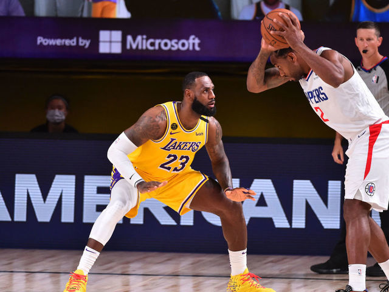

Background
Born on December 30, 1984, in Akron, Ohio, LeBron Raymone James Sr. was raised by a single mother. From a young age, he displayed immense basketball talent, playing for St. Vincent-St. Mary High School and quickly becoming a national sensation. He was drafted as the number 1 overall pick in the 2003 NBA Draft by the Cleveland Cavaliers.
Personality
LeBron is known for his leadership, competitive spirit, and basketball IQ. Off the court, he is a philanthropist, businessman, and activist. He uses his platform to advocate for social justice, education, and equality. His foundation supports at-risk children.
Achievements
- 4× NBA Champion (2012, 2013, 2016, 2020)
- 4× NBA MVP (2009, 2010, 2012, 2013)
- 2× Olympic Gold Medalist (2008, 2012)
- 19× NBA All-Star (2005-2023)
- NBA All-Time Scoring Leader
Skills and Abilities
- Elite basketball IQ and court vision
- Incredible athleticism and strength
- Versatile scoring ability
- Outstanding playmaking
- Defensive versatility
Gallery



Follow LeBron
Stay connected with LeBron: